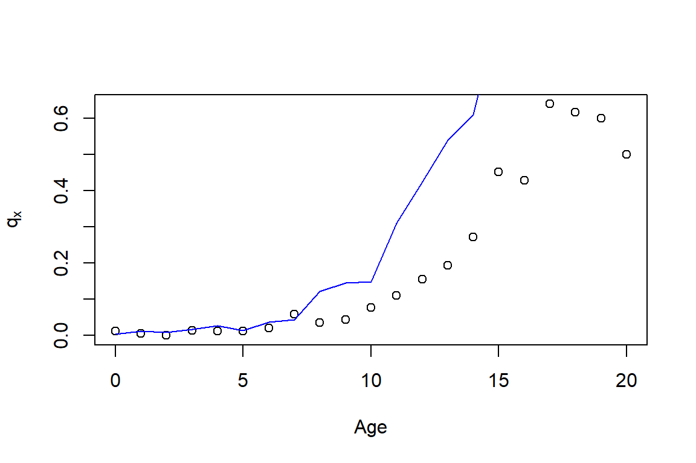

Chapter 2 Modeling Lifetimes
The analysis of life-contingent exposures such as insurer’s liability when selling a life insurance contract or a pension fund’s obligations when offering a new pension scheme starts with modeling individual lifetime and death. These models, in turn, have to be calibrated in the context of relevant (mortality) data.
Therefore, in this chapter, we first present different types of data that describe the mortality and lifetimes of certain population. We deliberately introduce the data in Section 2.1 without assuming prior knowledge of life-contingent modeling, and aim to develop an intuitive understanding of some of the associated challenges.
We then introduce the conventional framework for modeling lifetimes, particularly by introducing the concept of a future lifetime variable \(T_{\bf x}\) and its properties, and we then explore various approaches of specifying and estimating its distribution. Here, we discuss the traditional actuarial models for lifetimes such as analytical mortality laws and life tables, but we also introduce conditional predictive models that characterize the lifetime distribution based on a set of covariates or features.
2.1 Mortality data: Life Expectancies, Deaths, Counts, & Features
2.1.1 Life Expectancies
Perhaps the most relevant question to any individual when it comes to their future lifetime is: how long am I expected to live? Government agencies around the world publish vital statistics such as the life expectancies for their population, which are typically separated by age and gender – and potentially other attributes such as race.
The file CDCLifeExp.csv is provided with the supplemental information of this text and includes an excerpt of the U.S. national vital statistics that provides “Expectation of life, by age, race, […] and sex: United States, 2017” in Table 2.1.
library(knitr)
us_les <- read.csv("Data/CDCLifeExp.csv")
kable(us_les, caption="Life Expectancies From U.S. Vital Statistics")| Age | Total | Male | Female | Hispanic..Total | Hispanic..Male | Hispanic..Female |
|---|---|---|---|---|---|---|
| 0 | 78.6 | 76.1 | 81.1 | 81.8 | 79.1 | 84.3 |
| 20 | 59.4 | 57.0 | 61.8 | 62.5 | 59.9 | 64.9 |
| 40 | 40.7 | 38.7 | 42.6 | 43.5 | 41.2 | 45.5 |
| 60 | 23.3 | 21.7 | 24.7 | 25.5 | 23.6 | 27.0 |
| 80 | 9.2 | 8.4 | 9.8 | 10.5 | 9.4 | 11.1 |
The excerpt provides the life expectancy for ages 0 (newborn), 20, 40, 60, and 80 observed within a population, for males and females with separate figures for the hispanic subpopulation. There are a few immediate observations.
First, females generally seem to have a longer life expectancy than males, whereas the aggregate “Total” life expectancy is in between the two figures. This is intuitive as the aggregate population is (largely) made up of male and female individuals, so that the “Total” life expectancy is a weighted average of the gender-specific life expectancies, relative to the composition of the population.
Second, life expectancy is decreasing in age, which again is intuitive. It may be somewhat less obvious that the differences in life expectancies are less than the differences in age; subtracting the lines in the Table 2.1 gives that
| Age | Total | Male | Female | Hispanic..Total | Hispanic..Male | Hispanic..Female |
|---|---|---|---|---|---|---|
| -20 | 19.2 | 19.1 | 19.3 | 19.3 | 19.2 | 19.4 |
| -20 | 18.7 | 18.3 | 19.2 | 19.0 | 18.7 | 19.4 |
| -20 | 17.4 | 17.0 | 17.9 | 18.0 | 17.6 | 18.5 |
| -20 | 14.1 | 13.3 | 14.9 | 15.0 | 14.2 | 15.9 |
Hence, while a 40-year old male is twenty years older than a 20-year old male, the 20-year old’s life expectancy is 18.3 years higher. The difference of 1.7 years is due to the possibility of the 20-year old not surviving up to age 40. This effect is clearly more pronounced when comparing the 40-year old with a 60-year old.
Third, the life expectancies for the hispanic subpopulation exceed those of the total population, which suggests that other subpopulations must exhibit a lower life expectancy. There are many questions of potential reasons for this difference, although these fall more in the demographic or even sociological realm.
From an actuarial perspective, a relevant question may be how we could model the mortality data. In other words, is there a simple parametric model that may describe the progression of life expectancy across ages, at least in the context of one particular population? We will return to this question in the context of our mortality models, particularly in Section 2.3.
As an early caveat to the question raised at the beginning of this section, it is not necessarily accurate to take these figures as estimates of a given individual’s future lifetime or even its expectation. This is the case since the life expectancy is usually generated based on recent mortality experience rather than forecasts. As we will discuss in Section 2.4, this is the difference between the so-called period and cohort life expectancies.
2.1.2 Population Mortality Counts
We now bring into consideration of the population mortality experience that had been observed over time, which is available at the Human Mortality Database (HMD) for a wide range of countries. The available data include Exposures by age, sex, and calender year period, i.e. how many people people of a given age and sex lived in the country’s population during a given period of time, and corresponding Deaths, i.e. how many of these individuals had died.
In the supplemental information to this text, we provide exposures and deaths for the U.S. population, downloaded from the HMD as HMD_Expo.csv and HMD_Deaths.csv. We use the data over five year intervals starting at 1935 until 2015. Let us take a look at the exposures
us_exp <- read.csv("Data/HMD_Expo.csv")
kable(head(us_exp), align = "cccrrr", digits = 2, format.args = list(big.mark = ","))| Year_start | Year_end | Age | Female | Male | Total |
|---|---|---|---|---|---|
| 1,935 | 1,939 | 0 | 4,869,267 | 5,057,569 | 9,926,836 |
| 1,935 | 1,939 | 1 | 4,802,597 | 4,936,238 | 9,738,835 |
| 1,935 | 1,939 | 2 | 5,119,574 | 5,244,634 | 10,364,208 |
| 1,935 | 1,939 | 3 | 5,159,494 | 5,287,402 | 10,446,896 |
| 1,935 | 1,939 | 4 | 5,189,350 | 5,307,754 | 10,497,104 |
| 1,935 | 1,939 | 5 | 5,359,159 | 5,531,967 | 10,891,126 |
and deaths
us_deaths <- read.csv("Data/HMD_Deaths.csv")
kable(head(us_deaths), align = "cccrrr", digits = 2, format.args = list(big.mark = ","))| Year_start | Year_end | Age | Female | Male | Total |
|---|---|---|---|---|---|
| 1,935 | 1,939 | 0 | 253,145.89 | 335,492.00 | 588,637.89 |
| 1,935 | 1,939 | 1 | 36,010.02 | 42,169.20 | 78,179.22 |
| 1,935 | 1,939 | 2 | 17,718.83 | 21,208.22 | 38,927.05 |
| 1,935 | 1,939 | 3 | 12,450.36 | 14,852.17 | 27,302.53 |
| 1,935 | 1,939 | 4 | 10,154.85 | 11,771.25 | 21,926.10 |
| 1,935 | 1,939 | 5 | 8,678.43 | 10,339.57 | 19,018.00 |
Let us be more specific and plot the exposures and deaths for a 70 year old U.S. females over time, which is given in Figure @ref(fig:70ChapHMDU.S.Figs)
options(digits = 9)
options(scipen = 9)
par(mfrow=c(1,2))
plot(us_exp[us_exp$Age == 70,2], us_exp[us_exp$Age == 70,4]/1000, type = "l", lwd = 5, col = "green", main="Exposures", xlab = "year", ylab = "count", ylim = c(0,max(us_exp[us_exp$Age == 70,4])/1000))
plot(us_deaths[us_deaths$Age == 70,2], us_deaths[us_deaths$Age == 70,4]/1000, type = "l", lwd = 5, col = "red", main="Deaths", xlab = "year", ylab = "count", ylim = c(0,max(us_deaths[us_deaths$Age == 70,4])/1000))Figure 2.1: Exposures and Deaths (in thousands) for Females age 70 from the HMD U.S.
The stark increase in exposures is due to two effects; on one hand, the U.S. population had been growing substantially since 1935, and on the other hand, individuals had been showing an enhanced life expectancy over the time. As a consequence, the number of 70 year old U.S. females had increased from less than two million to more than six million. In contrast, the number of deaths had been more steady; While with an increasing number of exposures the number of deaths have increased, the chance of dying for a 70 year old had been decreasing. The latter becomes more evident by plotting the ratio of deaths and exposures as in Figure 2.2
par(mfrow=c(1,1))
minlim <- min(us_deaths[us_deaths$Age == 70,4]/us_exp[us_exp$Age == 70,4])
maxlim <- max(us_deaths[us_deaths$Age == 70,4]/us_exp[us_exp$Age == 70,4])
plot(us_deaths[us_deaths$Age == 70,2],us_deaths[us_deaths$Age == 70,4]/us_exp[us_exp$Age == 70,4],type = "l", lwd = 5, col = "blue", main="Deaths/Exposures", xlab = "year", ylab = "rate",ylim = c(minlim,maxlim))Figure 2.2: Death rates for Females age 70 from the HMD U.S.
Note that the chance of deceasing for a 70 year old female was more than 4% around 1940, but it had decreased over the time to a level lower than 2%. As we will see in Section 2.4, the ratio of deaths and exposures is closely related to death rates.
Alternatively, we can focus on a specific period – say the most recent five years in our data, i.e. 2010-2014 – and plot the deaths over exposures across ages as in Figure 2.3
us_mx_fem_2014 <- us_deaths[us_deaths$Year_start == 2010,4]/us_exp[us_exp$Year_start == 2010,4]
us_mx_mal_2014 <- us_deaths[us_deaths$Year_start == 2010,5]/us_exp[us_exp$Year_start == 2010,5]
plot(us_mx_fem_2014,type = "l", lwd = 5, col = "blue", main="Deaths/Exposures", xlab = "year", ylab = "rate", ylim = c(min(us_mx_fem_2014),max(us_mx_fem_2014)))
Figure 2.3: Death rates for Females across ages for 2010-2014 from the HMD U.S.
Not very surprisingly, the death rate increases fairly regularly with respect to age and its growth looks exponential. This observation is the foundation for the most famous and common analytic mortality model that is detailed in Section 2.3 known as the Gompertz law. It should be noted that the death rates at higher ages, specifically from 106 to 110, are shown a larger variability that could be explained by the fact very small subpopulations of high ages are observed and the estimates are more uncertain than those at lower ages.
2.1.3 Individual Mortality Data
While mortality counts are a common way to organize mortality data across a large population, which had been our emphasis in the previous section, the individual survival time data provide valuable pieces of information. Indeed, the data available to an insurance company typically consists of records of individuals. The company records individual details for each insured person from when they purchased the contract; these include personal characteristics such as sex, age, date-of-birth, etc., but also medical records and other underwriting information. In addition, the company knows whether or not the person had died at the current time—and if so, the time of death.
This latter aspect is common for survival or event history data. For each observation \(i\), a number of covariates or features \(x_i\), as well as the event time \(T_i\) if the event has already happened. Otherwise, we only know that by the current cutoff time, the event has not happened yet. In the context of survival analysis, which is the branch of statistics that deals with survival or event data, this is known as (right) censoring, i.e. the data are (right-)censored.
Data protection policies are omnipresent and insurance companies are not any different with respect to the policyholder data. On one hand, there are regulatory data protection that disallow disclosure of personal identifiable pieces of information. On the other hand, data are a key resource to a life insurer and sharing this valuable piece of information creates a competition disadvantage by revealing important information to the company’s competitive position. Therefore, rather than relying on real survival data, we consider a synthetic dataset consisting of a hypothetical portfolio of policyholders.
In the supplemental information to this text, we provide survival information for a hypothetical insurance company in SyntheticInsurerData.csv. The company has sold whole life insurance policies for since 1955. Policyholders have to go through an underwriting examination, and in addition to policyholders’ age, sex (0 for female, 1 for male), smoking status (0 for non-smoker, 1 for smoker), and the month of sale, the company records the applicants body-mass index (BMI) and the systolic blood pressure at the time of underwriting. Finally, for those policyholder with a claim, i.e., for the policyholders that have died, the company records the time of death (relative to the month of underwriting). The data is organized in the order of sales, so that the oldest entries are at the top of the data and the newest entries are at the bottom:
library(data.table)
ins_data <- fread("Data/SyntheticInsurerData.csv",data.table=FALSE)
kable(head(ins_data), align = "ccccrrrr")| Month_of_Sale | Age | Sex | Smoking | BMI | BloodPressure | Claim | Time_of_death |
|---|---|---|---|---|---|---|---|
| 1 | 27 | 0 | 0 | 25.8 | 117 | YES | 61.11 |
| 1 | 62 | 0 | 0 | 30.9 | 147 | YES | 17.42 |
| 1 | 52 | 1 | 0 | 26.7 | 130 | YES | 27.96 |
| 1 | 40 | 0 | 0 | 27.5 | 109 | YES | 52.33 |
| 1 | 24 | 1 | 1 | 21.5 | 96 | YES | 40.84 |
| 1 | 31 | 0 | 1 | 20.3 | 119 | YES | 53.99 |
#displaying the very end of the table similar to the very top of the table requires a few more steps
tmp_tail_ins_data <- tail(ins_data); rownames(tmp_tail_ins_data) <- NULL
kable(tmp_tail_ins_data, align = "ccccrrrr")| Month_of_Sale | Age | Sex | Smoking | BMI | BloodPressure | Claim | Time_of_death |
|---|---|---|---|---|---|---|---|
| 780 | 28 | 1 | 0 | 24.2 | 97 | NO | NA |
| 780 | 53 | 1 | 0 | 19.9 | 138 | NO | NA |
| 780 | 32 | 1 | 0 | 22.2 | 102 | NO | NA |
| 780 | 48 | 1 | 0 | 18.6 | 117 | NO | NA |
| 780 | 36 | 1 | 0 | 17.5 | 114 | NO | NA |
| 780 | 49 | 1 | 0 | 29.7 | 130 | NO | NA |
Evidently, most of the policies sold in the first months—back in 1955—have matured, and most recent underwritten policyholder are still alive. Let us further investigate the mortality dataframe and we start by summarizing the attributes of our data:
suppressWarnings(library(psych))
tmp_describe_ins_data <- psych::describe(ins_data)
kable(tmp_describe_ins_data, digits = 2, format.args = list(big.mark = ","))| vars | n | mean | sd | median | trimmed | mad | min | max | range | skew | kurtosis | se | |
|---|---|---|---|---|---|---|---|---|---|---|---|---|---|
| Month_of_Sale | 1 | 160,781 | 394.58 | 216.72 | 382.00 | 393.08 | 277.25 | 1.00 | 780.00 | 779.00 | 0.08 | -1.17 | 0.54 |
| Age | 2 | 160,781 | 39.99 | 11.63 | 39.00 | 39.64 | 11.86 | 19.00 | 65.00 | 46.00 | 0.22 | -0.73 | 0.03 |
| Sex | 3 | 160,781 | 0.70 | 0.46 | 1.00 | 0.75 | 0.00 | 0.00 | 1.00 | 1.00 | -0.88 | -1.23 | 0.00 |
| Smoking | 4 | 160,781 | 0.30 | 0.46 | 0.00 | 0.25 | 0.00 | 0.00 | 1.00 | 1.00 | 0.88 | -1.23 | 0.00 |
| BMI | 5 | 160,781 | 22.77 | 4.52 | 21.70 | 22.19 | 3.85 | 16.10 | 65.50 | 49.40 | 1.42 | 3.00 | 0.01 |
| BloodPressure | 6 | 160,781 | 114.75 | 15.75 | 114.00 | 114.37 | 16.31 | 53.00 | 199.00 | 146.00 | 0.25 | 0.09 | 0.04 |
| Claim* | 7 | 160,781 | 1.36 | 0.48 | 1.00 | 1.32 | 0.00 | 1.00 | 2.00 | 1.00 | 0.59 | -1.65 | 0.00 |
| Time_of_death | 8 | 57,529 | 30.69 | 12.88 | 30.18 | 30.73 | 13.65 | 0.01 | 64.15 | 64.14 | 0.01 | -0.66 | 0.05 |
In summary, there are 160,781 insureds, out of which 57,529, i.e. 35.78%, have died; the average age at purchase is about 40, and our portfolio has a high percentage of men (70%) and non-smokers (70%). The average BMI is 22.8 and the average blood pressure is 114.8, which are close to (but somewhat lower than) U.S. national averages; \(\color{red}{for\;details, \;see ...}\)
To illustrate the sales history, we plot the monthly sales of the company, which is given as Figure 2.4.
monthly_sales <- rep(0,780)
for (i in 1:780){
monthly_sales[i] <- sum(ins_data$Month_of_Sale == i)
}
plot(monthly_sales,type = "l", lwd = 2, col = "green", main="Monthly Sales", xlab = "month", ylab = "Sales")
abline(h = mean(monthly_sales), col = "red", lty = 2)Figure 2.4: Monthy sales for the synthetic mortality data
In summary, the company sells about 200 insurance contract each month, although there is some variation over the time; while sales initially increased, the company experience some ebbs and flows, potentially due to marketing efforts and/or the effectiveness of the products.
We now investigate the traits of the insureds for which various histograms are given as Figure 2.5.
par(mfrow=c(1,3))
hist(ins_data$Age,main="Insured Age", xlab="age", border="red", col="green")
hist(ins_data$BMI,main="Body Mass Index", xlab="bmi", border="red", col="green")
hist(ins_data$BloodPressure,main="Systolic Blood Pressure", xlab="bp", border="red", col="green")Figure 2.5: Histograms for the synthetic mortality data
Most individuals are in between thirty and fifty years of age when purchasing the coverage, but some sales to younger and some older individuals are observed. The Body Mass Index (BMI) is concentrated between 20 and 30, although there are some outliers with relatively large values. The systolic blood pressure is roughly bell shaped, with most applicants exhibiting blood pressure measurements at normal levels (below 120) or slightly elevated levels (120-130). We could further visualize the relationship between these three attributes by looking at the correlation correlation matrix corresponding to these three characteristics, which is given as Figure 2.6.
suppressWarnings(library(corrplot))
tmp_corr_ins_data <- cor(ins_data[,c(2,5,6)])
colnames(tmp_corr_ins_data) <- c("Age", "BMI", "BP")
rownames(tmp_corr_ins_data) <- c("Age", "BMI", "BP")
corrplot(tmp_corr_ins_data, method="circle", order="hclust", addCoef.col = "red", tl.col="black", tl.srt=45)Figure 2.6: Correlation matrix for the synthetic mortality data corresponding to age, BMI and BP (blood pressure)
Clearly, high blood pressure and elevated BMI are positively associated, and an elevated blood pressure is more common for elderly insureds, which are common observations in many populations.
One of our main focus is the realized lifetime, which could only be observed for those individuals where a claim had been paid. We could thus plot the distribution of the age at death, which is illustrated in Figure 2.7.
hist(ins_data$Age+ins_data$Time_of_death,main="Age at Death", xlab="age", border="red", col="green")
Figure 2.7: Age at Death for the synthetic mortality data
Not surprisingly, the majority of deceased policyholders have died at higher ages, since the bulk of deaths are concentrated between seventy and ninety years old. There are a few individuals that died relatively young, and similarly a few that were close to achieving the centenarian status, though it should be noted that some policyholders at higher ages may still be alive. Indeed, the ages of five oldest individuals that are still alive are
## [1] 99.17 100.25 100.42 101.50 102.92and thus, it is clear that we observe nor many centenarians.
It is intuitive that the number of deaths are associated with sales \(\color{red}{\text{not clear to me}}\), as is evident when plotting the number of deaths by the year of sale, which is displayed in Figure 2.8.
annual_death <- rep(0,65)
for (i in 1:65){
for (j in 1:12){
annual_death[i] <- annual_death[i] + sum(ins_data[ins_data$Month_of_Sale == (i-1)*12 +j,7] == "YES")
}
}
plot(annual_death,type = "l", lwd = 4, col = "blue", main="Annual Deaths", xlab = "Year", ylab = "Deaths")Figure 2.8: Annual deaths for the synthetic mortality data
We could investigate the relationship of the time of death to policyholder characteristics by creating a correlation plot amongst those that had already died. The correlation matrix appears as Figure 2.9.
#suppressWarnings(library(corrplot))
tmp_dead_corr_ins_data <- cor(ins_data[ins_data$Claim == "YES",c(2,5,6,8)])
colnames(tmp_dead_corr_ins_data) <- c("Age", "BMI", "BP", "TD")
rownames(tmp_dead_corr_ins_data) <- c("Age", "BMI", "BP", "TD")
corrplot(tmp_dead_corr_ins_data, method="circle", order="hclust", addCoef.col = "red", tl.col="black", tl.srt=45)Figure 2.9: Correlation matrix for the synthetic mortality data corresponding to age, BMI, BP (blood pressure) and TD (time of death)
Hence, the time of death is (strongly) negatively associated with age, which is not surprising as elderly individuals are more likely to die. Similar behaviour is also observed for the BMI and blood pressure attributes that are negatively associated with the the time of death, but we should clarify that the BMI and blood pressure measurements are observed when the policy inception though these negative associations explain why such attributes are good predictors of the insured’s health. The pairwise correlation between age, BMI and blood pressure are in line with our findings from Figure 2.6 that includes all insureds irrespective of their life status.
Even this simple analysis could help in understanding why the life office should evaluate the individual risk per policy by taking into consideration the available information, and more importantly, to have a fair evaluation of the covariates with strong influence over the policy final payout.
2.2 Modeling Death
The previous section has introduced various examples of mortality data. Clearly, the most relevant question to actuaries is how to use this piece of information in order to devise lifetime models that could become the basis for analyzing the life-contingent exposures, which we require a theoretical underpinning. This section provides with the minimal theoretical foundation related to the conventional framework for life-contingent modeling. We commence by introducing the most important concept of a lifetime random variable and the key actuarial quantities that allow for a formal interpretation of the data previously presented.
2.2.1 Lifetime random variable and its distribution
It should be first recognized that we have been focus on understanding the lifetime uncertainty for a given individual or (sub)population, where the life status has been assumed to be dichotomous, i.e. alive and dead are the only life status under observation. Clearly, this simplified assumption helps us to create a parsimonious presentation that is fit for its purpose at this very moment, though one could consider multi-state models – with multiple life status such as alive, death, temporary disability, permanent disability and any other long term health condition, etc. – or bespoke models that relates to specific life insurance products where the modeler could consider non-health related factors such as early termination of a contract that have an impact on the policy’s cashflows. Both cases require multiple decrement modeling that explain the transition in between different policy’s status in order to describe the complex risk structure of a policy with multiple benefits.
From now on, we only assume a dichotomous life model, i.e. alive/dead, where our primary goal is to evaluate the time of death of a given individual. The usual notation is the lifetime random variable \(T_x\) that explains the remaining future lifetime for an individual of currently aged \(x\). The underlying assumption of such approach is that the future lifetime is fully predictable only by age, while all other data attributes such as sex, socio-economic factors, genetic and health history factors, etc. do not explain the target variable, i.e. time of death. Obviously, the mortality risk should include all possible sources of data and their attributes that could better differentiate the mortality risk amongst insureds or any any other words, to achieve equity in the pricing process. That is, we denote by \(T_{\bf{x}}\) the lifetime random variable for an insured with many available observable attributes \(\bf{x}\) from a feature space that includes more traits that the age \(\it{x}\). Therefore, the notation interchange in between \(\bf{x}\) and \(\it{x}\) will further reflect the feature space considered and/or available to the mortality risk modeller.
While the feature space is the key ingredient of the mortality model, we should reflect upon external pressures when choosing the feature space. For example, the use of genetic specific attributes for risk classification is under vast scrutiny by insurance ethical experts, since such pieces of information could lead to genetic discrimination, and therefore, there are regulatory constraints in using such attributes. Moreover, even the sex attribute – one of the most important mortality explanatory variable – is not always acceptable; for example, the European Union insurance regulations had imposed pricing neutrality with respect to sex factors for quite some time, which means that life and non-life insurance policies issued within the European Union market should price males and females at the same level if all other observable attributes are similar.
We are now ready to discuss the distribution of \(T_\bf{x}\)/\(T_x\) though we implicitly assume that sex is the only explanatory variable and thus, all definitions are mostly given for \(T_x\) that apply to \(T_\bf{x}\) if not explicitly stated. The random variable \(T_x\) is defined on positive real values, \((0,\infty)\), though the lifetime is always finite, but we do not explicitly define the limiting/ultimate age that could be reached by an individual of age \(x\)/\(\bf{x}\). By definition, let \(F_x\) and \(S_x\) be the cumulative distribution function and survival function of T_x, respectively, and thus, we write \[F_x(t):=\Pr(T_x\le t)\quad \text{and}\quad S_x(t):=\Pr(T_x > t)=1-\Pr(T_x \le t)=1-F_x(t)\quad\text{for all}\;t>0.\] While the above definitions are also available for \(T_\bf{x}\), there are slight differences in further derivations. Note that \(T_x\) solely depends on the age \(x\), and thus, \(T_x\) and \(T_0|T_0>x\) are identically distributed random variables; in other words, the future lifetime for \((x)\) is the same as the future lifetime of a newborn give that this newborn reaches age \(x\), \(T_0>x\). The mathematical formulations of this observation are given in the next equations: \[\begin{eqnarray*} F_x(t) &=& Pr(T_x \le t) = Pr(T_x \le t \mid T_x>0) = Pr(T_0-x \le t \mid T_0-x>0)= Pr(T_0 \le x + t \mid T_0 > x)\\ &=&\frac{\Pr(x<T_0\leq x+t)}{\Pr(T_0>x)}=\frac{F_0(x+t)-F_0(x)}{S_0(x)}=\frac{S_0(x)-S_0(x+t)}{S_0(x)} \end{eqnarray*}\] and \[\begin{eqnarray*} S_x(t) &=& Pr(T_x > t) = Pr(T_x > t \mid T_x > 0) = Pr(T_0-x > t \mid T_0-x>0) = Pr(T_0 > x+t \mid T_0>x)\\ &=&\frac{\Pr(T_0> x+t)}{\Pr(T_0>x)}=\frac{S_0(x+t)}{S_0(x)}. \end{eqnarray*}\] Similar mathematical formulations for \(T_\bf{x}\) are not possible, since the future lifetime for \((x)\) is explained by more traits than only the age attribute. That is, \(T_\bf{x}\) could not be simply linked with the future lifetime a newborn that currently reached the set of characteristics \(\bf{x}\) as we had done for \(T_x\).
The future lifetime random variable is naturally continuously distributed, but we further assume that is absolutely continuous, i.e. \(F_x\) does not have jumps. Therefore, one could define \[f_x(t):=\frac{\partial F_x(t)}{\partial t}=\frac{\partial \big(1- S_x(t)\big)}{\partial t}=-\frac{\partial S_x(t)}{\partial t}\quad\text{for all}\;t>0.\] which is known as the probability density function of \(T_x\) and a similar definition could be written for the probability density function of \(T_\bf{x}\). The link between the current lifetime random variable and its equivalent newborn lifetime random variable is only possible for \(T_x\), and in that case we could write that \[f_x(t)=-\frac{\partial S_x(t)}{\partial t}=-\frac{\partial \left(\frac{S_0(x+t)}{S_0(x)}\right)}{\partial t}=-\frac{\frac{\partial S_0(x+t)}{\partial t}}{S_0(x)}=\frac{f_0(x+t)}{S_0(x)}\quad\text{for all}\;t>0.\] Clearly, no immediate equivalent mathematical formulation for \(f_\bf{x}\) in terms of the lifetime of a newborn could be provided.
The force of mortality, \(\mu_x\)/\(\mu_\bf{x}\), represents the instantaneous mortality rate of \(x\)/\(\bf{x}\) \[\mu_x:=\frac{\partial F_x(t)}{\partial t}\mid t=0=-\frac{\partial S_x(t)}{\partial t}\mid t=0\quad\text{and}\quad\mu_\textbf{x}:=\frac{\partial F_\textbf{x}(t)}{\partial t}\mid t=0=-\frac{\partial S_\textbf{x}(t)}{\partial t}\mid t=0.\] We could further write that \(\mu_x=\frac{f_0(x)}{S_0(x)}\), but such simplification is not extendable to \(\mu_\bf{x}\). Finally, recall that \[ \mu_x=\frac{f_0(x)}{S_0(x)}=-\frac{S_0^{'}(x)}{S_0(x)}=-\frac{\partial }{\partial x} \log S_0(x)\quad\text{for all}\quad x\ge 0,\] which in turn – after integrating the last expression – gives that \[ S_0(x) = \exp\left\{-\int_0^x \mu_t\;dt \right\}\quad\text{for all}\quad x\ge 0. \]
2.2.2 Survival and mortality probabilities
The mathematical foundation of the lifetime random variable has been discussed in the previous section, and based on those definitions, we could provide the standard actuarial notations on survival and mortality probabilities. That is, the survival probability of \(x\) at time \(t\) is defined as follows: \[\begin{equation} {_tp_x}:= S_x(t)\quad\text{for all}\;t>0 \end{equation}\] and represents probability that individual \(x\) survives \(t\) more units of time. Further, the mortality probability of \(x\) at time \(t\) is defined as follows: \[\begin{equation} {_tq_x}:= F_x(t)\quad\text{for all}\;t>0 \end{equation}\] and represents probability that individual \(x\) dies within the next \(t\) units of time. Clearly, \({_tp_x}+{_tq_x}=1\), since the individual \(x\) either dies or survives after \(t\) units of time. By definition, we have that \[{_1p_x}:= {p_x}\quad\text{and}\quad {_1q_x} = {q_x}.\] Similar definitions are true for a high dimensional feature space, i.e. when \(x\) is replaced by \(\bf{x}\).
2.2.3 Complete expectation of life
The complete expectation of life is an intuitive mortality indicator and represents the average remaining lifetime of \(x\), and is defined as follows: \[\stackrel{\circ}{e}_x:=E[T_x]=\int_0^\infty S_x(t)\;dt=\int_0^\infty {_tp_x}\;dt.\] Note that the second identity could be shown via integration by parts and keeping in mind that \(T_x\) is a non-negative random variable with a finite expectation, which is an well-known result, but the proof is left to math enthusiast which is beyond the scope of this book.
Another centrality mortality measure is the central death rate, also known as central rate of mortality. This measure is defined as the average number of deaths each year that have characteristics \(\bf{x}\) at the moment of death in the relevant observation period, divided by the average population with the same characteristics \(\bf{x}\) over the same period, and is denoted as \(m_\bf{x}\). In practice, the observation period could be three to five years. For example, if we consider the U.S. mortality data, \(m_{50}\) based on the observation period 2010 to 2014 would be the average number of deaths at age \(50\) years across 2010, 2011, 2012, 2013 and 2014, divided by the average number of people aged \(50\) years across 2010, 2011, 2012, 2013 and 2014; clearly, this example considers that age is the only explanatory variable to the mortality risk.
\(\color{red}{\text{[Vali:] this is left over from Dani and I am not sure what you meant --}}\) And then we can kind of use the different data sources in the different sections. For instance, when discussing analytic mortality laws we can fit parameters to the age-dependent life expectancies (moment-based), we can generate life tables using the mortality.org data (as in the R class exercises I sent) and then use simulated data for the non-parametric and the survival regression stuff. I would probably switch the order of sections D and E.
2.3 Analytical laws of mortality
Actuarial practice relies on extensive mortality experience based on non-parametric and semi-parametric models. Early on mortality modeling had focus on simplified parametric models that depend on some parameters and are known as Analytic Mortality Laws; such models assume analytic survival or mortality functions, which have their own merits though the lack of sophistication is easily visible. From the pedagogical perspective, the analytical laws of mortality are good toy models that provide simple approximations of reality, which is the pure essence of any model.
Since we deal with simple mortality models, it would make sense to assume that mortality is age dependent only. It is well-known that any survival function takes the value 1 and 0 at the left and right end point of its distribution. Thus, if a newborn is assumed to have a known limited age \(\omega\), then \(S_0(0)=1\) and \(S_0(\omega)=0\). One simple analytical example is the De Moivre Mortality Law which assumes a linear dependence of \(S_0\), i.e. \[ S_0(x) = 1 - \frac{x}{\omega}\quad\text{for all}\quad 0 \leq x \leq \omega. \] Now, the force of mortality becomes \[ \mu_x= \frac{-S_0'(x)}{S_0(x)} = \frac{\frac{1}{\omega}}{1 - \frac{x}{\omega}} = \frac{1}{\omega - x}\quad\text{for all}\quad 0 \leq x < \omega. \] A generalization of the above analytical mortality law is known as the generalized De Moivre Law, and corresponds to a survival function with the following parametrization \[ S_0(x) = \left(1 - \frac{x}{\omega}\right)^{\alpha}\quad\text{for all}\quad 0\leq x \leq \omega, \] where the positive shape parameter \(\alpha\) decides how far the survival function departs from the linear dependence. Then, its force of mortality becomes \[ \mu_x = \frac{\alpha/\omega\,(1-x/\omega)^{\alpha-1}}{(1-x/\omega)^{\alpha}} = \frac{\alpha}{\omega - x}\quad\text{for all}\quad 0\leq x \leq \omega. \]
A slightly different approach is to impose a particular structure to the force of mortality. The simplest example is to consider a constant force of mortality model, i.e. \(\mu_t=\mu\) for all \(t>0\), which corresponds to an Exponentially distributed lifetime \(T_x\) with \[ S_0(x) = e^{-\mu\,x}\quad\text{for all}\quad x\ge 0. \] it is expected that the force of mortality is increasing over the time, which has been observed for the De Moivre and generalized De Moivre mortality laws, but not for the above constant force mortality model, which questions its validity to replicate the human mortality. A remedy to the constant force of mortality model is provided by the Gompertz Mortality Law and is given as follows: \[ \mu_x = B\cdot c^x \quad\text{for all}\quad x\ge 0\quad\text{with}\quad B>0,\,c>1. \] Its survival function becomes \[ S_0(x) =\exp\left\{-\int_0^x \mu_t\;dt \right\}=\exp\left\{-\int_0^x B\cdot c^t\;dt \right\}=\exp\left\{-\frac{B \cdot c^t}{\log c}\Big\lvert_{t=0}^{t=x} \right\} =\exp\left\{ - \frac{B}{\log(c)} (c^x - 1)\right\}\quad\text{for all}\quad x\ge 0. \] A three parameter version of the Gompertz Mortality Law was proposed by Makeham, where an age-independent term is added and captures the external causes of death, i.e. \[ \mu_x = A + B\cdot c^x\quad\text{for all}\quad x\ge 0\quad\text{with}\quad B>0,\,A+B\geq 0,\,c>1, \] and is known as the Gompertz-Makeham Mortality Law or Makeham Mortality Law. Then, its survival function could be derived as follows: \[\begin{eqnarray*} S_0(x) &=& \exp\left\{-\int_0^x \mu_t\,dt\right\}\\ &=& \exp\left\{-\int_0^x A\,dt\right\}\,\exp\left\{-\int_0^x B\cdot c^t\,dt\right\}\\ &= & \exp\{-A x\}\,\exp\left\{ - \frac{B}{\log(c)} (c^x - 1)\right\} \\ &=& \exp\left\{ - Ax - \frac{B}{\log(c)} (c^x - 1)\right\}. \end{eqnarray*}\]
The last analytical mortality model is sufficiently rich to be further considered for fitting the U.S. life expectancy on the Gompertz-Makeham mortality law. For instance, the U.S. females data lead to the following parameters:
\(\color{red}{\text{[Vali:] Did not change much in this part -- starts from here}}\)
S_0 <- function(x,A,B,c) { exp(- A * x - B * (exp(c*x) - 1)/ c) }
le <- function(age,A,B,c){
Sfixed <- function(x){ S_0(x+age,A,B,c)/S_0(age,A,B,c)}
res <- integrate(Sfixed,lower = 0, upper = (120-age))$value
return(res)
}
#We just use the resulting parameters here and do not carry out the following routine
#tomin <- function(x){
# res <- 0
# for (i in 1:5){
# res <- res + (us_les[i,4] - le((i-1)*20,0.0001*(1+x[1]/100),0.000007*(1+x[2]/100),0.11*(1+x[3]/100)))^2
# }
# return(res)
#}
#library(pracma)
#res <- fminsearch(tomin,c(0,0,0))
#A_opt_fem <- A*(1+res$xmin[1]/100)
#B_opt_fem <- B*(1+res$xmin[2]/100)
#c_opt_fem <- c*(1+res$xmin[3]/100)
A_opt_fem <- 0.0005385767
A_opt_fem ## [1] 0.0005385767## [1] 0.00001119213## [1] 0.1031558#When running for males
#A_opt_male <- 0.0008564071
#B_opt_male <- 3.544491e-05
#c_opt_male <- 0.09276854which match the U.S. female life expectancies quite well:
tmp <- us_les[,c(1,4)]
tmp$fitted <- rep(0,5)
for (i in 1:5){
tmp[i,3] <- le((i-1)*20,A_opt_fem,B_opt_fem,c_opt_fem)
}
kable(tmp, digits = 2, format.args = list(big.mark = ","))| Age | Female | fitted |
|---|---|---|
| 0 | 81.1 | 81.05 |
| 20 | 61.8 | 61.87 |
| 40 | 42.6 | 42.72 |
| 60 | 24.7 | 24.49 |
| 80 | 9.8 | 9.90 |
The pictorial representation of the survival function appears as Figure 2.10.
Figure 2.10: Fitted Survival Curve
And here are the calibrated versions: … \(\color{red}{\text{[Vali:] Did not change much in this part -- ends here.}}\)
2.4 Life tables and their functions
Life insurance policies have a complex benefit structure that requires knowledge upon the probability of paying the benefits besides many other risk modeling parameters. Policy pricing, meeting the regulatory requirements and understanding the life portfolio risk performance are all actuarial evaluations that rely on these risk modeling parameters, but the mortality risk plays an important role for which sophisticated stochastic models are possible. A rather simpler way is to construct life tables that are not only of pedagogical use, but create a simplified platform of discussions for a smooth transition to understanding more complex mortality models.
We first start with creating some simple life tables in Section 2.4.1 that are based on the U.S. mortality data, and we then move on into Section 2.4.2 that provides some refinements of these life tables.
2.4.1 Life table based on U.S. population data
The central focus of this section is to create some simple life tables and to validate our empirical results by revealing the main traits of a generic mortality data. The U.S. population data are only included in our analysis, and we start by looking into central death rates based on deaths and exposures. Before giving the summary results, here are some oh these computation are made; by looking at the main data from HMD_Expo.csv and HMD_Deaths.csv, one could retrieve the 1935-1939 exposures and deaths for individuals aged 0 as follows:
\[ \begin{equation*} \begin{array}{lccc} &\text{Female} & \text{Male} & \text{Total}\\ \text{Exposures}& 4,869,267.21 & 5,057,569.27 & 9,926,836.48\\ \text{Deaths} & 253,145.89 & 335,492 & 588,637.89 \end{array} \end{equation*} \]
The above could help with finding the corresponding 1935-1939 central death rates for the female, male and entire U.S. population data, and the calculations are given below: \[ \begin{eqnarray*} m_o^{Female}&=&\frac{253,145.89}{4,869,267.21}=0.05198849828\\ m_o^{Male}&=&\frac{335,492}{5,057,569.27}=0.06633463272\\ m_o^{Total}&=&\frac{588,637.89}{9,926,836.48}=0.05929763134. \end{eqnarray*} \]
We could now provide the summary of the central death rates as follows:
library(data.table)
us_mx <- us_deaths
us_mx[,4:6] <- us_deaths[,4:6] / us_exp[,4:6]
kable(head(us_mx), align = "cccrrr")| Year_start | Year_end | Age | Female | Male | Total |
|---|---|---|---|---|---|
| 1935 | 1939 | 0 | 0.051988498 | 0.066334633 | 0.059297631 |
| 1935 | 1939 | 1 | 0.007498031 | 0.008542782 | 0.008027575 |
| 1935 | 1939 | 2 | 0.003460997 | 0.004043794 | 0.003755912 |
| 1935 | 1939 | 3 | 0.002413097 | 0.002808973 | 0.002613459 |
| 1935 | 1939 | 4 | 0.001956863 | 0.002217746 | 0.002088776 |
| 1935 | 1939 | 5 | 0.001619364 | 0.001869059 | 0.001746192 |
#displaying the very end of the table similar to the very top of the table requires a few more steps
tmp_tail_us_mx <- tail(us_mx); rownames(tmp_tail_us_mx) <- NULL
kable(tmp_tail_us_mx, align = "cccrrr")| Year_start | Year_end | Age | Female | Male | Total |
|---|---|---|---|---|---|
| 2010 | 2014 | 105 | 0.544747305 | 0.648959567 | 0.555566429 |
| 2010 | 2014 | 106 | 0.566723146 | 0.587329097 | 0.568728261 |
| 2010 | 2014 | 107 | 0.557618769 | 0.670120241 | 0.568175534 |
| 2010 | 2014 | 108 | 0.636754582 | 0.611534481 | 0.634501769 |
| 2010 | 2014 | 109 | 0.659418665 | 0.571037316 | 0.650733498 |
| 2010 | 2014 | 110 | 0.593688157 | 0.520304886 | 0.584736850 |
Based on the five year counting of deaths and exposures, we have displayed only the early ages central death rates based on the first period of observation, i.e. 1935-1939, and the upper higher ages central death rates based on the last period of observation, i.e. 2010-2014. The data show the expected trend that females show lower rates than the males. Moreover, besides the infantile mortality, all low ages death rates follow a decreasing pattern with respect to the age factor, which is also observable for high ages with the caveat that a higher uncertainty is present at such ages due to the relative smaller sample size.
Let’s now construct a mortality life table using the 2010-2014 U.S. Females and Males data, and we first pull out the previous pieces of information regarding to the 2010-2014 central death rates, which are only the first elements of these two life table.
us_mx_fem_2014 <- us_mx[us_mx$Year_start == 2010,-c(2,5,6)]
colnames(us_mx_fem_2014)[colnames(us_mx_fem_2014)=="Female"] <- "mx US Females"
tmp_head_us_mx_fem_2014 <- head(us_mx_fem_2014); rownames(tmp_head_us_mx_fem_2014) <- NULL
kable(head(tmp_head_us_mx_fem_2014), align = "ccr")| Year_start | Age | mx US Females |
|---|---|---|
| 2010 | 0 | 0.005461737 |
| 2010 | 1 | 0.000379927 |
| 2010 | 2 | 0.000224890 |
| 2010 | 3 | 0.000169394 |
| 2010 | 4 | 0.000138322 |
| 2010 | 5 | 0.000119244 |
us_mx_mal_2014 <- us_mx[us_mx$Year_start == 2010,-c(2,4,6)]
colnames(us_mx_mal_2014)[colnames(us_mx_mal_2014)=="Male"] <- "mx US Males"
tmp_head_us_mx_mal_2014 <- head(us_mx_mal_2014); rownames(tmp_head_us_mx_mal_2014) <- NULL
kable(head(tmp_head_us_mx_mal_2014), align = "ccr")| Year_start | Age | mx US Males |
|---|---|---|
| 2010 | 0 | 0.006554279 |
| 2010 | 1 | 0.000441664 |
| 2010 | 2 | 0.000298869 |
| 2010 | 3 | 0.000225097 |
| 2010 | 4 | 0.000184733 |
| 2010 | 5 | 0.000145992 |
The second elements of our life tables require computing the annual death probabilities \(q_x\) from \(m_x\) for which some background information is needed. An intuitive definition of the central death rate is given in Section 2.2.3, which is the ratio between the expected deaths and average population within a given observation period. A more mathematical formulation is possible when the reference period is reduced to one year for a population of 1, and is given as follows:
\[
m_{\bf{x}}:=\frac{E[I_{T_{\bf{x}}\le1}]}{E\big[\min\big(T_{\bf{x}},1\big)\big]},
\]
where \(I_{\cdot}\) is the indicator function for which \(I_A\) takes the values 1 and 0 if \(A\) is true and false, respectively. The nominator represents the theoretical expected deaths since
\[E[I_{T_{\bf{x}}\le 1}]=\int_0^{\infty} I_{t\le1}\cdot f_{\bf{x}}(t)\;dt=\int_0^1 f_{\bf{x}}(t)\;dt=\Pr(T_{\bf{x}}\le1)=q_{\bf{x}}.\]
Moreover, the denominator clearly represents the theoretical number of survivors and could be further derived \[ E\big[\min\big(T_{\bf{x}},1\big)\big]=\int_0^\infty \Pr\Big(\min\big(T_{\bf{x}},1\big)>t\Big)\;dt=\int_0^1 \Pr\big(T_{\bf{x}}>t\big)\;dt=\int_0^1 S_{\bf{x}}(t)\;dt=\int_0^1 {_tp_{\bf{x}}}\;dt. \]
Note that the first identity could be shown via integration by parts. Finally, combining altogether gives that \[ m_{\bf{x}}=\frac{q_{\bf{x}}}{\int_0^1 {_tp_{\bf{x}}}\;dt}. \]
Annual death probabilities could be estimated on observed central death rates by making some fractional age assumptions. One simple fractional age assumption considers a constant force of mortality over the period of interest, i.e. one year since we compute the one year death rates, and this assumption is known as the constant force assumption. Let’s consider the case in which age is the only explanatory variable, and thus, under the constant force assumption we have that \[ _sq_x=F_x(s)=\frac{S_0(x)-S_0(x+s)}{S_0(x)}=\frac{\exp\left\{-\int_0^x \mu_t\;dt \right\}-\exp\left\{-\int_0^{x+s} \mu_t\;dt \right\}}{\exp\left\{-\int_0^x \mu_t\;dt \right\}}=1-\exp\left\{-\int_x^{x+s} \mu_t\;dt \right\}=1-e^{-\mu^*_{x} \cdot s} \] and \[ _sp_x=\exp\left\{-\int_x^{x+s} \mu_t\;dt\right\}=e^{-\mu^*_x \cdot s} \] for all \(0\le s\le 1\), where \(\mu^*_{x}\) is the constant force of mortality over the ages \(x\) and \(x+1\). In turn, one may get that \[ m_{x}=\frac{q_x}{\int_0^1 {_tp_x}\;dt}=\frac{1-e^{-\mu^*_x}}{\int_0^1 e^{-\mu^*_x \cdot t}\;dt}=\frac{1-e^{-\mu^*_x}}{\big(1-e^{-\mu^*_x}\big)/\mu^*_x}=\mu^*_x. \]
The fractional age assumptions allow us to determine the one year death probability curve, and under the constant force assumption, one may estimate the one death probabilities as follows: \[q_x\approx 1-e^{-\mu^*_{x}}\approx 1-e^{-m_x}\quad\text{for all integers}\quad x.\] The death probability curves for the U.S. Females data are depicted in both original and logarithmic scales, and displayed as Figure 2.11.
par(mfrow=c(1,2))
us_mx_fem_2014$qx <- 1-exp(-us_mx_fem_2014$mx)
plot(us_mx_fem_2014$qx,type = "l", lwd = 5, col = "blue", main="Original scale", xlab = "age", ylab = "q_x",ylim = c(0,1.0))
lines(us_mx_fem_2014$mx,col="red")
plot(log(us_mx_fem_2014$qx, base = 10),type = "l", lwd = 5, col = "blue", main="Log scale", xlab = "age", ylab = "q_x")Figure 2.11: One year death probability curve (in blue) and central death rate (in red) for the 2010-2014 U.S. Females data across all ages
Similar pictorial representations for the U.S. Males data appear in Figure 2.12.
par(mfrow=c(1,2))
us_mx_mal_2014$qx <- 1-exp(-us_mx_mal_2014$mx)
plot(us_mx_mal_2014$qx,type = "l", lwd = 5, col = "blue", main="Original scale", xlab = "age", ylab = "q_x",ylim = c(0,1.0))
lines(us_mx_mal_2014$mx,col="red")
plot(log(us_mx_mal_2014$qx, base = 10),type = "l", lwd = 5, col = "blue", main="Log scale", xlab = "age", ylab = "q_x")Figure 2.12: One year death probability curve (in blue) and central death rate (in red) for the 2010-2014 U.S. Males data across all ages
As we can see, \(q_x\) and \(m_x\) are similar with the exception of the later years, which is not surprising since \(1-e^{-y}\approx y\) for \(y\) sufficiently small and by keeping on mind that the central death rates are small at all ages except of high ages. As expected, the log scale plots from Figures 2.11 and 2.12 are more informative in the sense that the log scale reveals the marginal changes over various ages, and we now combined the two log scaled curves into Figure 2.13.
plot(log(us_mx_fem_2014$qx, base = 10), type = "l", lwd = 5, col = "blue", main="Log scale", xlab = "age", ylab = "q_x")
lines(log(us_mx_mal_2014$qx, base = 10), lwd = 5, col = "red")Figure 2.13: One year death probability curve for the 2010-2014 U.S. Females (in blue) and Males (in red) data across all ages
Figure 2.13 shows the usual higher mortality rates for males than for females, but also extremely pronounced differences at ages 16 to 40 that could be explained by social factors that are specific to U.S. Males at post adolescence ages; moreover, significant differences at ages 50 to 70 are also observed, and are due to health related factors that males around the world tend to be exposed earlier than females.
We are now able to construct life tables based on the U.S. mortality data, but we first provide a brief introduction to the concept of life tables. A life table contains various pieces of information about the mortality risk exhibit by individuals from a targeted age span; death of survivorship elements are displayed based on the observational data. More specific mortality rates due to seasonal epidemics, disability, etc., are usually not included. More complex life tables could be produced for multi-state models that we mentioned before, and are known as multi-state life table.
A life table is known as period life table if the prevalence rates – useful for health related causes of decrement – or mortality rates are observed during a specific time period of a certain population. On the contrary, a cohort life table is generated by collating these rates from a specific population observed over its entire lifetime, i.e. from early birth – all individuals are assumed to be born during the same time period – until the observational group is extincted. Both life tables have their own merits, but the cohort life tables tend to be more popular in the actuarial practice and demography, since mortality experts are particularly interested into understanding the mortality patterns within subpopulations for actuarial calculations and advising the economic and social policy-makers. Given our available U.S. mortality data, we are only able to provide period life tables.
Our life table examples are given for a dichotomous mortality model with dead/alive possible life status for which age and sex are the only focal mortality explanatory variables. We restrict to the 2010-2014 U.S. mortality data and display the death probabilities, i.e. \(q_x\)’s, central death rate, i.e. \(m_x\)’s and \(l_x\)’s for a given life table radix, i.e. \(l_0\); these are displayed for all ages, but separately for females and males when \(l_0\) is chosen to be 1,000,000, which is an ad-hoc choice though other choices like 100,000 would be possible as well. One could view the third elements of our life table, i.e. \(l_x\), as the expected number of individuals at risk with characteristics \(x\), which is purely the age in this case given that the data are already separated by sex. Therefore, we have that \[ _sp_x=\frac{l_{x+t}}{l_x}\quad\text{for all}\quad x,t\ge0, \] which in turn leads \[l_{x+1}=l_x\cdot p_x=l_x\big(1-q_x\big)\approx l_x\cdot e^{-m_x}\quad\text{for all integers}\quad x.\] under the constant force of mortality assumption. For example,
\[ \begin{eqnarray*} \begin{array}{lllll} l_0^{Female}&=&l_0\big(1-q_0^{Female}\big)&\approx& l_0\cdot \exp\big(-m_0^{Female}\big)&=&1,000,000\cdot e^{-0.005461737}&=& 994,553.151168\\ l_0^{Male} &=&l_0\big(1-q_0^{Male}\big) &\approx& l_0\cdot \exp\big(-m_0^{Male}\big) &=&1,000,000\cdot e^{-0.006554279}&=& 993,467.153436, \end{array} \end{eqnarray*} \]
which are quite close to the exact values 994,553.151225 and 993,467.1533967, respectively that are displayed on the actual life tables that follow after Figure 2.14. The \(l_x\) values are now plotted in Figure 2.14 where once again the female subpopulation shows higher survivorship trend than the male subpopulation.
lf <- rep(0,length(us_mx_fem_2014$mx))
lf[1] <- 1000000
for (i in 2:111){
lf[i] = lf[i-1] * (1-us_mx_fem_2014[i-1,4])
}
lm <- rep(0,length(us_mx_mal_2014$mx))
lm[1] <- 1000000
for (i in 2:111){
lm[i] = lm[i-1] * (1-us_mx_mal_2014[i-1,4])
}
plot(lf, type = "l", lwd = 5, col = "yellow", xlab = "age", ylab = "l_x",ylim = c(0,1000000))
lines(lm, type = "l", lwd = 5, col = "orange", xlab = "age", ylab = "l_x",ylim = c(0,1000000))Figure 2.14: Expected number at risk for the 2010-2014 U.S. Females (in yellow) and Males (in orange) data across all ages
tmp_life_table_us_mx_mal_2014 <-round(us_mx_mal_2014, digits = 9);
colnames(tmp_life_table_us_mx_mal_2014)[c(4,5)]<- c("qx US Males","lx US Males")
rownames(tmp_life_table_us_mx_mal_2014) <- NULL
DT::datatable(tmp_life_table_us_mx_mal_2014) We could use these life tables to obtain other death/survival related projections such as the newborn survival probabilities curves, which appears in Figure 2.15.
par(mfrow=c(1,2))
kP0f <- us_mx_fem_2014$lf/us_mx_fem_2014$l[1]
plot(kP0f, xlab="age", type = "l", lwd = 5, col = "green")
kP0m <- us_mx_mal_2014$lm/us_mx_mal_2014$l[1]
plot(kP0m, xlab="age", type = "l", lwd = 5, col = "green")Figure 2.15: One year death probability curve for newborn Femals (left) and Males (right) for the 2010-2014 U.S. data across all ages
\(\color{red}{\text{[Vali:] I assume that the next calculation is based on the following integral aproximation $\stackrel{\circ}{e}_x\approx 0.5+e_x$?}}\)
\(\color{red}{\text{[Vali:] Some calculations neeed the kurtate future lifetime $e_x$ which I thought that would be defined by Adam and Emil.}}\)
\(\color{red}{\text{[Vali:] No changes are made in this subsection from this point.}}\)
\(\color{red}{\text{[Vali:] The flow of the chapter is not ideal, especially the CF assumption.}}\)
Life expectancy:
## [1] 81.3014163And we can do the same for a 50-year old female:
kP50 <- us_mx_fem_2014$l[51:111]/us_mx_fem_2014$l[51]
plot(kP50,xlab="age", type = "l", lwd = 5, col = "red")Let’s go through and evaluate period life expectancies at birth and at 50 across the years. This is a little more involved:
e0 <- rep(0,16)
e50 <- rep(0,16)
plot(kP0f,xlab="age", type = "l", col = 1)
i <- 1
for (s in seq(1935,2010,5)){
#Get central death rates for each start yeat
mx <- us_mx[us_mx$Year_start == s,4]
s0 <- rep(0,111)
#Calculate the survival function
s0[1] <- 1
for (j in 2:111){
s0[j] <- s0[j-1]*exp(-mx[j-1])
}
#Include in the plot
lines(s0, col=(i+1))
#And evaluate life expectancies by summing over kPx's
e0[i] <- sum(s0)-0.5
e50[i] <- sum(s0[51:111]/s0[51])-0.5
i <- i+1
}
As is evident, the survival function has shifted quite dramatically over the past eighty years. The same is true for life expectancies:
par(mfrow=c(1,2))
plot(seq(1935,2010,5),e0, type = "l", lwd = 5, col = "blue", main="life expectancies at birth, across years", xlab = "year", ylab = "life expectancy")
plot(seq(1935,2010,5),e50, type = "l", lwd = 5, col = "red", main="life expectancies at 50, across years", xlab = "year", ylab = "life expectancy")2.4.2 Mortality Improvement Modeling
\(\color{red}{\text{[Vali:] No changes are made in this subsection.}}\)
The fundamental issue e.g. when compiling a life table as we did here relying on one year of mortality data, we are relying on the snapshot of the year 2014 mortality experience. For a life insurance company selling annuities, in order to adequately price and reserve for their future liabilities, it is necessary to take into account future changes in mortality. As we have seen above, life expectancies have changed substantially over the last decades. This means that an eighty year old today may not have the same \(q_{80}\) as an eighty year old twenty years from now, which is the relevant \(q_{80}\) when selling an annuity to a sixty year old today…
One way of describing how mortality changed across years and ages are so-called mortality improvement factors, i.e. the percentage reduction in the mortality rate for each age \(x\) over successive years (\(t-1\) to \(t\)): \[ \varphi(x,t) = 1 - \frac{q_x(t)}{q_x(t-1)}. \]
Since we consider data in five-year intervals, we scale to one year: \[ \varphi(x,t) = 1 - \left(\frac{q_x(t)}{q_x(t-5)}\right)^{1/5}. \] To obtain an impression, let’s evaluate in the context of our mortality data. One way of visualizing is a so-called heat map. As detailed in study note, patterns on the vertical, horizontal, and diagonal dimension relate to year, age, and cohort effects.
us_mx_fem <- us_mx[,-c(2,5,6)]
colnames(us_mx_fem)[colnames(us_mx_fem)=="Female"] <- "mx"
us_mx_fem$qx <- 1-exp(-us_mx_fem$mx)
phi <- matrix(rep(0,111*15),nrow=111,ncol=15,byrow = TRUE)
for (t in 1:15){
for (x in 1:111){
phi[x,t] <- 1 - (us_mx_fem[t*111+x,4]/us_mx_fem[(t-1)*111+x,4])^(1/5)
}
}
heatmap(phi,Colv = NA,Rowv = NA)
Diagonals = cohort effects!
One simple way of forecasting mortality into the future are so-called single factor mortality improvement models, i.e. models where \(\varphi(x,t)\) only depends on \(x\) – let’s write \(\varphi_x\). With that, the above equation becomes: \[ q_x(t)= q_x(t-1)\times (1- \varphi_x), \] or, generalizing: \[ q_x(t) = q_x(0)\times (1-\varphi_x)^t \]
To obtain suitable improvement factors, let’s average across years under consideration:
And let’s plot to check them out, and include smoothed version:
ages <- 1:111
lo <- loess(phi_x ~ ages)
plot(phi_x, type = "l", lwd = 5, col = "red", main="mortality improvement factors", xlab = "age", ylab = "phi")
lines(predict(lo), col='blue', lwd=2)
Using smoothed.
We can get a life table for a sixty year old in 2015 by applying the improvement factors to forecast future mortality probabilities using the relationship above:
q_50plusx <- rep(0,61)
for (i in 1:61){
q_50plusx[i] <- us_mx_fem_2014[50+i,4] * (1 - phi_x[50+i])^(i-1)
}And let’s compare the resulting \(q_x\), the ones for 2015 across all ages above 60 and the forecasted cohort mortalities for the 60 year old in 2015:
plot(q_50plusx, type = "l", lwd = 2, col = "red", main="q_x comparison", xlab = "age")
lines(us_mx_fem_2014[51:111,4], col = "blue", lwd = 2)
Evaluate life expectancy at 50:
kP50_i <- rep(0,61)
kP50_i[1] <- 1
for (i in 2:61){
kP50_i[i] <- kP50_i[i-1] * (1 - q_50plusx[i-1])
}
plot(kP50,xlab="age", type = "l", lwd = 5, col = "red")
lines(kP50_i, col = "blue", lwd = 2)
## [1] 33.4390951## [1] 35.74330332.5 Non-parametric survival estimation
Kaplan-Meier and Nelson-Aalen. Please check out the Loss Data Analysis descriptions of these topics.
2.6 Conditional models: Survival regression
parametric models; proportional hazard (Cox) model; additive model
- R tutorial – survival regression; constructing conditional mortality tables
\(\color{red}{\text{[Vali:] This is too far from my comfort zone and it would take some time to contribute.}}\)
Appendix 2A. Life Table: Recursive Calculations
Actuaries and other analysts have found life tables to be useful in interpreting mortality patterns for many years. Origins of life tables can be traced back to Edmund Halley’s paper entitled, “An estimate of the degrees of the mortality of mankind, drawn from various tables of births and funerals in the city of Breslau,” published in 1693. Some scholars attribute this paper as marking the birth of actuarial science.
As introduced in Section 2.4, a life table is based on the quantities \(l_x = radix \times S_a(x)\) where \(S_a(\cdot)\) is the survival function for a life aged \(a\). In this expression, \(a\) is the starting age of the table and \(radix\) is a constant generally taken so that \(l_a\) is a large round number. With this choice, we interpret \(l_x\) to be the “number living” at age \(x\).
Table 2A.1 shows life tables for female and male Indonesians. Here, each radix, one for females and one for males, is chosen so that there are 100,000 people alive at age \(a=20\). Also from Table 2A.1, you will see that the mortality distribution is given in terms of (integral) values of \(x\); such a choice is common in life tables as is other regular successive values, e.g., quinquennial for five year values.
With a table of successive values, many interesting recursive expressions are available. To begin, we can define the change \(d_x = l_x - l_{x+1}\) that we interpret as the “number dying” between ages \(x\) and \(x+1\). These changes allow us to express life table quantities \(l_x\) and \(d_x\) in terms of one-year death rates, \(q_x\), as follows. Recall that \(q_x = 1 - S_0(x+1)/S_0(x) = 1 - S_a(x+1)/S_a(x)\) and so
\[ \frac{d_x}{l_x} = \frac{l_x - l_{x+1}}{l_x} = \frac{radix}{radix}\frac{S_a(x) - S_a(x+1)}{S_a(x)} = q_x . \]
From this we can use life table quantities \(l_x\) and \(d_x\) to calculate one-year death rates, \(q_x\). We can also reverse the process. That is, starting with one-year death rates as inputs, we can calculate life table entries recursively using \(l_{x+1} = l_x - l_x q_x = l_x p_x\) for \(x=a, a+1, \ldots\). Thus, for example, in Table 2A.1, with \(x=20\), we have \(l_{21} = l_{20} - l_{20} q_{20} = (100000)(1 - 0.000340) = 99966\). For readers familiar with spreadsheet methods, click on a few cells in Table 2A.1 to see the recursive definition of table entries.
Later chapters on life contingent benefits will highlight recursive calculations. To foreshadow this, consider the curtate life expectancy introduced in Section 2.4. An easy calculation (that the reader should verify) shows the recursive expression
\[ e_x = \sum_{k=1}^{\infty} ~ {~}_k p_x = p_x (1 + e_{x+1}) . \]
The \(e_x\) columns in Table 2A.1 utilize this relationship. To visualize these entries, Figure 2.16 compares female to male life expectancies for the Indonesian data. Here, we see that females have a higher life expectancy at each age. The difference is greatest at the first age of the table \(a=20\) which is 61.06 - 55.46 = 5.60.
On Your Own. The Indonesian mortality data were retrieved from the Mortality and Other Rate Tables database sponsored by the Society of Actuaries. This database contains mortality (and other) rates from scores of countries. You will enjoy downloading them and comparing mortality experiences across the globe.
Table 2A.1. Indonesian Life Table
Figure 2.16: Indonesian Life Expectancies. Female life expectancies are given in the red open symbols, males are represented with the blue solid line.
On Your Own. Try a few interactive calculations using R.
\(\require{enclose}\)